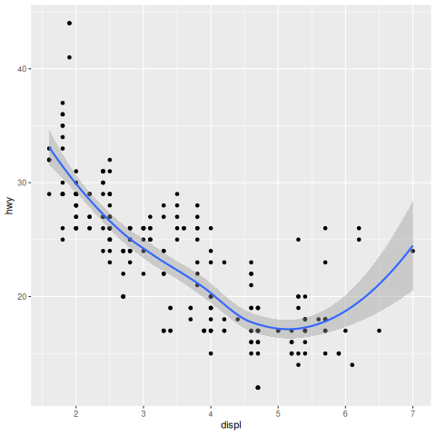
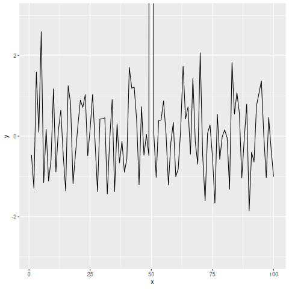

Taller de R. Clase 07
Table of Contents
1. Lattice
library(lattice) data(environmental) df <- environmental head(df)
ozone radiation temperature wind 1 41 190 67 7.4 2 36 118 72 8.0 3 12 149 74 12.6 4 18 313 62 11.5 5 23 299 65 8.6 6 19 99 59 13.8
1.1. xyplot
xyplot(ozone ~ radiation, data=df, main="Ozone vs. Radiation")
temp.cut <- equal.count(df$temperature, 4)
xyplot(ozone ~ radiation | temp.cut, data=df)
xyplot(ozone ~ radiation | temp.cut, data=df, layout=c(1,4))

1.2. Panel
xyplot(ozone ~ radiation | temp.cut, data=df,
panel = function(x,y, ...){
panel.xyplot(x,y,...)
fit <- lm(y~x)
panel.abline(fit)
}, xlab = "Solar Radiation", ylab="Ozone(ppb)",
main = "Ozone Vs. Solar Radiation")
1.3. splom
splom(~df)

1.4. histogram
histogram(~temperature, data=df)

wind.cut <- equal.count(df$wind,4)
histogram(~ozone | wind.cut, data=df)
2. ggplot2
library(ggplot2) df <- data.frame(mpg) head(df)
manufacturer model displ year cyl trans drv cty hwy fl class 1 audi a4 1.8 1999 4 auto(l5) f 18 29 p compact 2 audi a4 1.8 1999 4 manual(m5) f 21 29 p compact 3 audi a4 2.0 2008 4 manual(m6) f 20 31 p compact 4 audi a4 2.0 2008 4 auto(av) f 21 30 p compact 5 audi a4 2.8 1999 6 auto(l5) f 16 26 p compact 6 audi a4 2.8 1999 6 manual(m5) f 18 26 p compact
2.1. qplot
qplot(displ, hwy, data=mpg)

qplot(displ, hwy, data=mpg, color=drv)

qplot(displ, hwy, data=mpg, geom=c("point", "smooth"))

qplot(hwy, data=mpg, fill=drv)

qplot(displ, hwy, data=mpg, facets=.~drv)
qplot(hwy, data=mpg, facets=drv~., binwidth=2)

2.2. ggplot
2 -8 Plotting with ggplot2
library(ggplot2) df <- data.frame(mpg) head(df)
manufacturer model displ year cyl trans drv cty hwy fl class 1 audi a4 1.8 1999 4 auto(l5) f 18 29 p compact 2 audi a4 1.8 1999 4 manual(m5) f 21 29 p compact 3 audi a4 2.0 2008 4 manual(m6) f 20 31 p compact 4 audi a4 2.0 2008 4 auto(av) f 21 30 p compact 5 audi a4 2.8 1999 6 auto(l5) f 16 26 p compact 6 audi a4 2.8 1999 6 manual(m5) f 18 26 p compact
g <- ggplot(df, aes(x=displ, y=hwy))
g + geom_point()

g <- ggplot(df, aes(x=displ, y=hwy))
g + geom_point() + geom_smooth()

g <- ggplot(df, aes(x=displ, y=hwy)) g + geom_point() + geom_smooth(method="lm")

g <- ggplot(df, aes(x=displ, y=hwy)) g + geom_point() + facet_grid(.~drv) + geom_smooth(method= "lm")

2.3. Modificaciones est'eticas
g <- ggplot(df, aes(x=displ, y=hwy)) g + geom_point(color="steelblue", size=4, alpha=1/2)
g <- ggplot(df, aes(x=displ, y=hwy))
g + geom_point( aes(color= drv), size=4, alpha=1/2)
2.4. Labels
g <- ggplot(df, aes(x=displ, y=hwy)) g + geom_point( aes(color= drv), size=4, alpha=1/2) + labs(title="My Title") + labs(x="x label", y = "y label")
2.5. Notas sobre los limites
testdat <- data.frame(x=1:100, y=rnorm(100)) testdat[50, 2] <- 100 ## outlier
par( mfrow=c(1,2)) plot(testdat$x, testdat$y, type='l') plot(testdat$x, testdat$y, type='l', ylim=c(-3,3)) par(mfrow=c(1,1))
g <- ggplot(testdat, aes(x=x, y=y)) g + geom_line() #g + geom_line() + ylim(-3,3)
g <- ggplot(testdat, aes(x=x, y=y))
g + geom_line() + ylim(-3,3)
g <- ggplot(testdat, aes(x=x, y=y))
g + geom_line() + coord_cartesian(ylim=c(-3,3))
